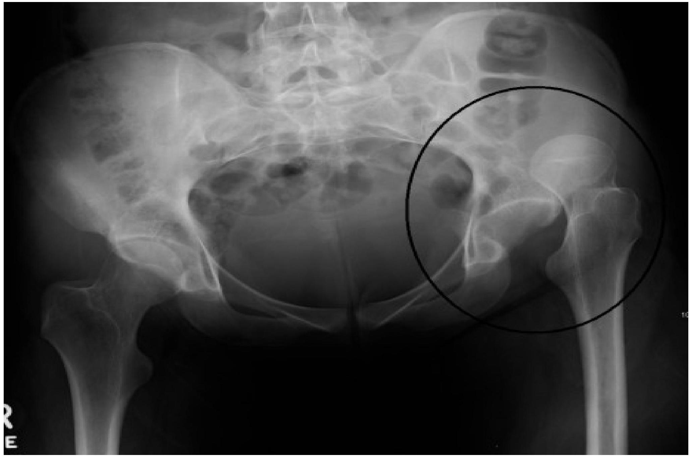
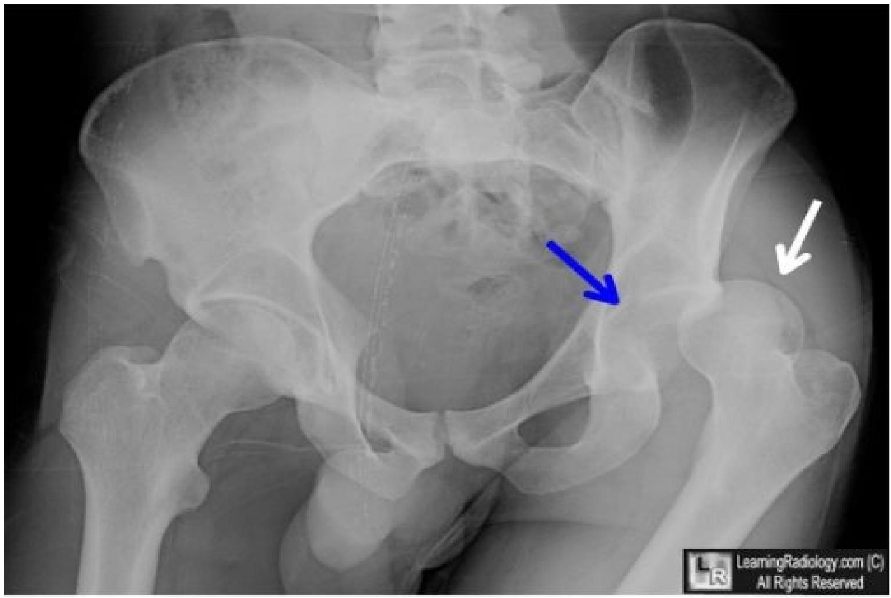
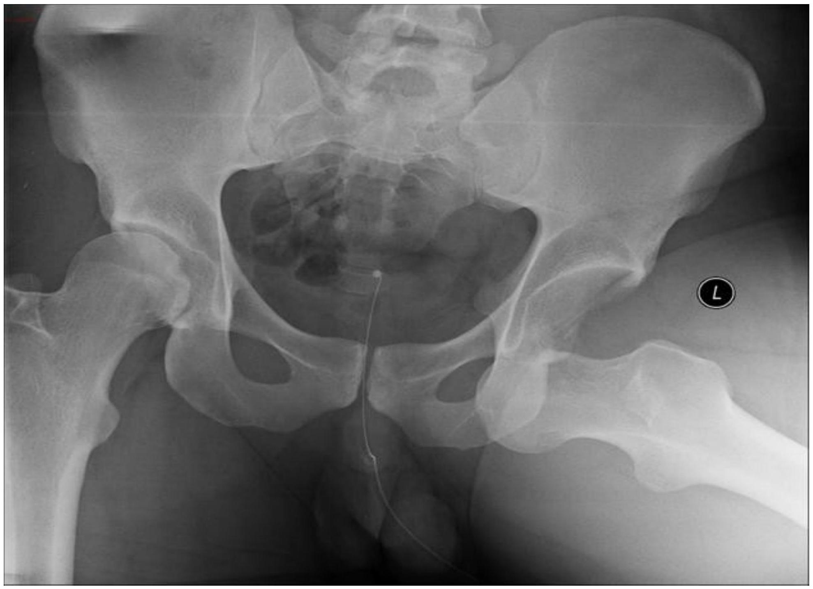
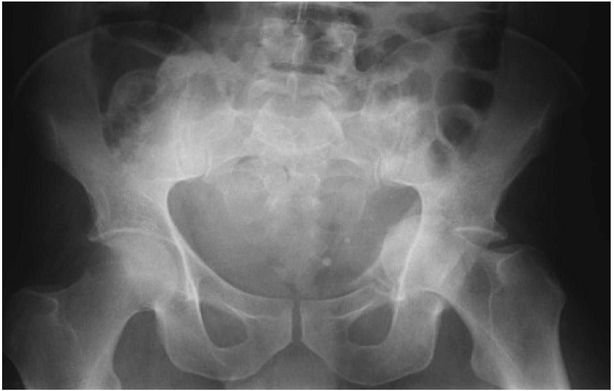

DISLOCATIONS AND FRACTURE DISLOCATIONS OF THE HIP JOINT
G.M.WERU Lecturer clinical medicine
TYPES
- Posterior dislocation- Accounts for 80%
- Anterior dislocation
- Central fracture dislocation
POSTERIOR DISLOCATION
MECHANISMS OF INJURY
- Head on collision or any violent force against the knee with a flexed or semi flexed and adducted hip joint
- Motor cycle crash
CLINICAL FEATURES
- Pain on the affected joint
- Restricted movement of the affected joint
- The leg on the affected side is shorter and the hip joint is adducted, slightly flexed and medially(internally) rotated
- Head of femur can be felt posterior and superiorly to the acetabulum
- Tenderness
INVESTIGATION
- Pelvic X-RAY(A/P)
- X-ray of affected joint (lateral or oblique view at 45°)
- Shows the femoral head in the postero-lateral position in relation to the acetabulum
- Usually there is an associated chip fracture of the acetabular roof
Posterior dislocation
Posterior dislocation
TREATMENT
-
Immediate closed reduction under G/A and muscle relaxant.
Technique
- The patient is laid supine on the ground on a soft mattress
- An assistant steadies the pelvis at the iliac crests
- The surgeon/clinician flexes the hip and knee joints at 90° and pulls the thigh upwards as well as gradually externally(laterally) rotating the femur
- Gently test all movements, and request for check X-rays
- Immobilize the limb with skin traction for 3-6 weeks. Mean while mobilizing the exercises for the hip and knee joints are begun a few days and are gradually intensified
- Upon discharge, the patient continues with non-weight bearing(crutches) for 6 more weeks.
- Open(operative) reduction if closed reduction fails especially for neglected cases.
COMPLICATIONS
- Injury to sciatic nerve
- Damage to femoral head
- Associated fracture of acetabular roof
- Avascular necrosis of femoral head
- Post- traumatic ossification
- Osteoarthritis
ANTERIOR DISLOCATION
MECHANISMS OF INJURY
- Road traffic accident when the force approaches from behind
- When a weight falls on the back of a patient when the knee joints are straightened and bent forward
*The head of femur dislocates anteriorly and inferiorly in relation to the acetabulum
CLINICAL FEATURES
- Pain on the affected joint
- Inability to move the joint
- Deformity of the limb, which the opposite of that of posterior dislocation; the leg on the affected side is longer, extended, abducted and laterally(externally) rotated
- Tenderness
INVESTIGATION
- Pelvic X-RAY (A/P)
- X-ray of affected joint (lateral views)
- Femoral head is seen lying anteriorly and inferiorly to the acetabulum
Anterior hip dislocation
TREATMENT
-
Closed reduction under G/A and muscle relaxant.
Technique
- The patient is laid supine on the ground
- An assistant steadies the pelvis at iliac crests
- The surgeon flexes the hip and knee joints at 90° and pushes the femur backward into the acetabulum
- Test the joint movement and request for check x-rays
- Immobilize the limb with skin traction for 3-6 weeks
- Discharge the patient on non-weight bearing for 6 weeks
- Open(operative) reduction if closed reduction fails.
COMPLICATIONS
- Compression to femoral nerve
- Compression to femoral artery
- Avascular necrosis of femoral head
- Osteoarthritis
CENTRAL FRACTURE DISLOCATION
*It is regarded as fracture dislocation because the femoral head smashes into the acetabular floor before going through it into the pelvis
MECHANISMS OF INJURY
- A violent central force against the greater trochanter
- Road traffic accident
- The head of femur is driven into the acetabular floor causing a comminuted fracture of the acetabulum
CLINICAL FEATURES
- Some patients may present in shock if there is severe concealed bleeding
- Pain
- Inability to move the joint
- ± Bruising over the trochanteric region
- The leg lies in normal position and is of normal length
- Tenderness
INVESTIGATIONS
- Pelvic X-RAY( A/P view)
- Reveals fracture of the acetabular floor
- ± Fracture of the femoral head
- CT Scan- Reveals the extent of damage to the acetabular floor
Central fracture dislocation
TREATMENT
- Resuscitation with fluid replacement or transfusion and surgical repair of damaged blood vessels
- Closed reduction under G/A
- An assistant steadies the pelvis
- The surgeon pulls the thigh at the same time attempts to lever out the femoral head from its displaced position
- Apply skin traction for six weeks and commence active movements afterwards
- Discharge the patient on non-weight bearing for 6 weeks
- Open reduction with internal fixation if the acetabular fracture is severely comminuted using combination of multiple screws and contoured plates
- It should be borne in mind that many patients with central dislocation will eventually need total Arthroplasty on account of secondary degenerative changes
COMPLICATIONS
- Damage to pelvic organs and blood vessels leading to Hypovolaemic shock
- Early osteoarthritis- Which is inevitable